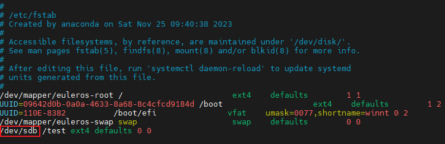

虚拟机磁盘覆盖恢复后业务数据异常。
执行磁盘覆盖恢复，原磁盘与目标磁盘的总线类型不同，导致恢复后硬盘设备名称变化。例如：SCSI总线类型的磁盘恢复至VIRTIO总线类型的磁盘，恢复完成后原“/dev/sdb”的硬盘设备会变为“/dev/vdb”，导致引用原硬盘设备名称的业务数据异常。
例如：“/etc/fstab”配置文件中，原挂载的硬盘名称为“/dev/sdb”，恢复后请修改为“/dev/vdb”。
